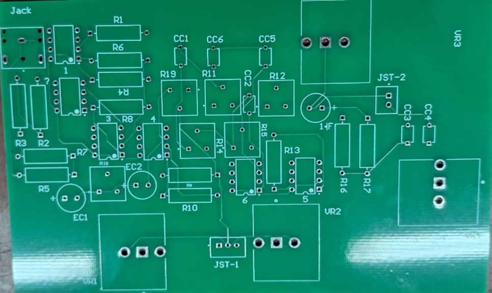
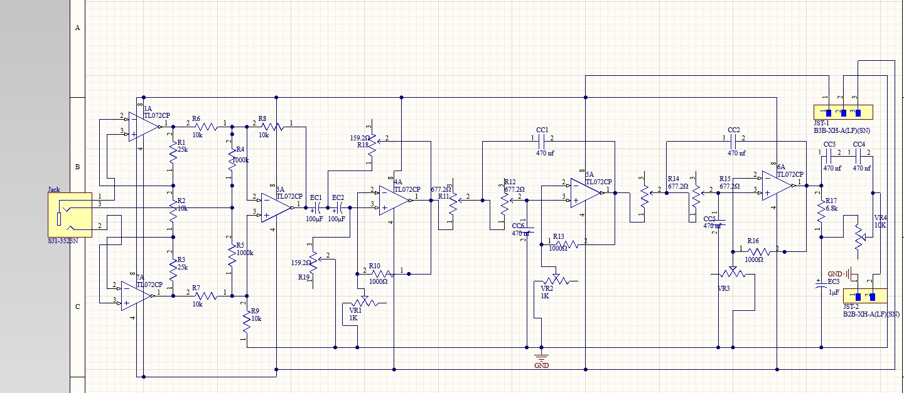
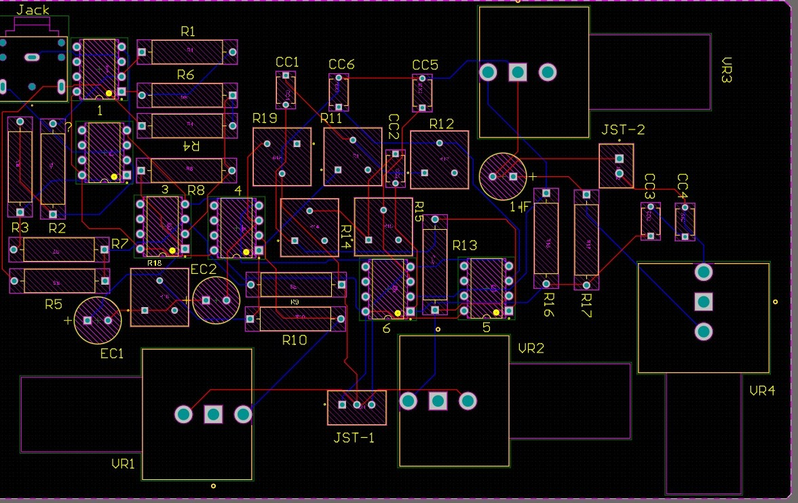
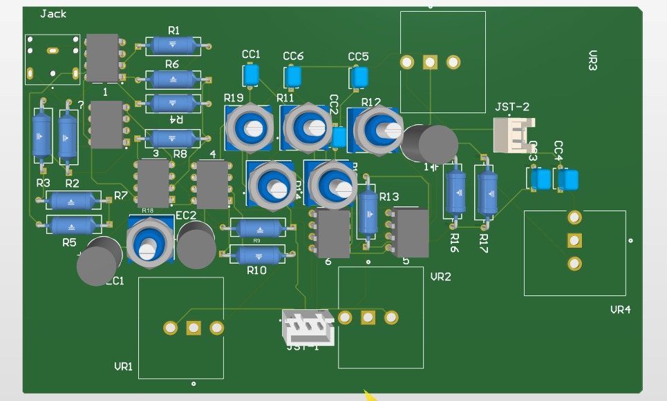
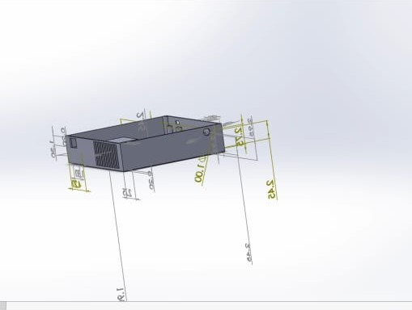
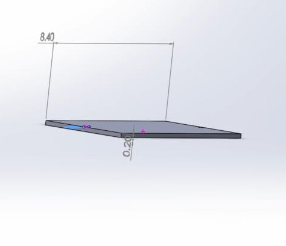
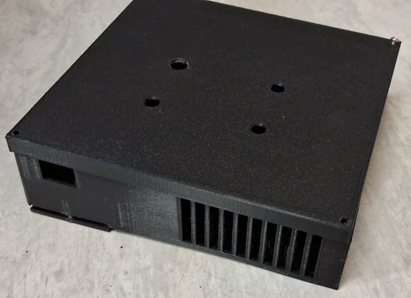
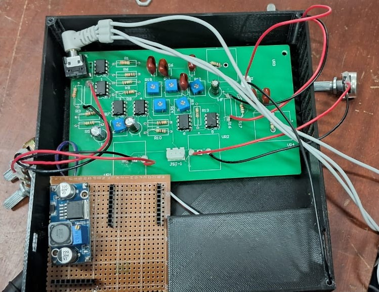

Schematic and Pcb
Learn how analog circuits are designed for various applications, from basic amplifiers to complex systems.




Enclosure Design
Discover how analog systems are revolutionizing industries like healthcare, automotive, and telecommunications.



Product Development
Explore the importance of analog signal processing in shaping modern communication and data systems.
